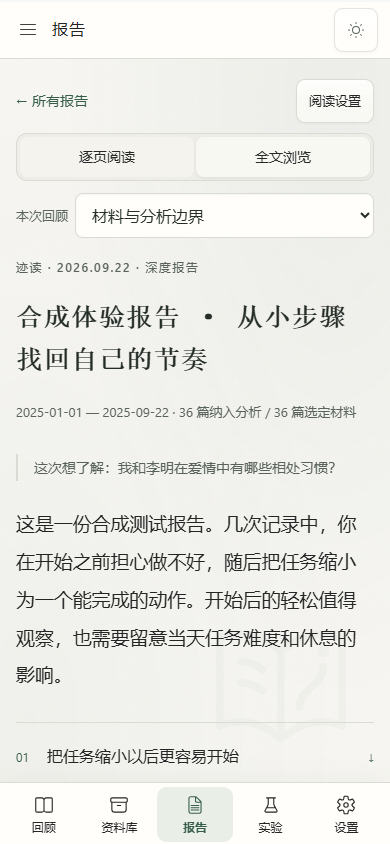

保留在本机的部分
原始文件只读导入。日记、报告与模型密钥加密保存在设备上；本地档案密码不会上传。这个下载页不接收日记。

给已经写下很多的人
继续用熟悉的日记工具。迹读接收已有记录，帮助你看见跨时间的线索。
从材料到回顾
不用改写日记，也不需要准备提示词。先核对材料，再决定是否开始分析。
选择 TXT、Markdown、CSV、DOCX 或文字版 PDF。原文件保持不变。
预览日期、条目和隐私替换结果，确认哪些文字会进入分析。
重要判断带有日期和证据，也会展示反向线索与可能的其他解释。
合成材料示例
示例报告从少量虚构记录中整理出“把任务拆小后更容易开始”这一观察，并提醒读者留意任务难度和当时状态等其他解释。
先说清楚，再开始
你可以只在本机查看材料，也可以选择云端模型。两种方式的边界会分别说明。
原始文件只读导入。日记、报告与模型密钥加密保存在设备上；本地档案密码不会上传。这个下载页不接收日记。
分析副本直接发送给你选择的模型服务商，不经过迹读的账号服务。发送前可以检查副本。自动隐私替换可能漏掉信息。
可在本机暂停并继续未完成的分析。报告用于自我回顾，不是心理或医学诊断。
Windows x64 · 0.3.0
迹读 Windows 免费试用版无需账号或兑换码。分析可以连接你自己的模型 API，也可以使用本机 Ollama。迹读不收取费用；云端模型服务商可能收取 API 费用。
SHA-256：6013b449976b4635f3e9532e429c127a523f8a079fb7befe18514a5e479cb7e6
使用前了解
不会。你继续在熟悉的工具里记录，迹读只负责导入、整理和回顾。
不能。报告根据现有记录提出可核对的观察和候选解释，不替你做重大决定，也不提供心理或医学诊断。
Windows x64 安装包可在上方下载。手机网页尚未开放。免费试用不需要向迹读付款或兑换 CDK；若选用云端模型，费用由你与该服务商结算。
目前不提供。公开仓库只存放这个下载页和安装包入口；免费试用不代表开源。